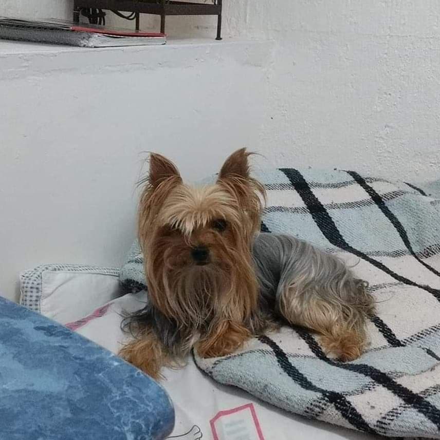
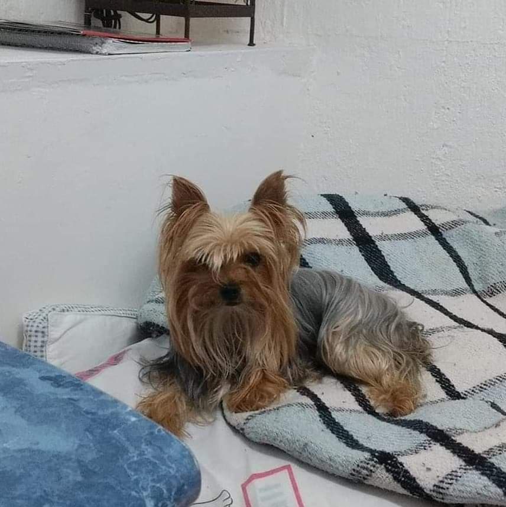
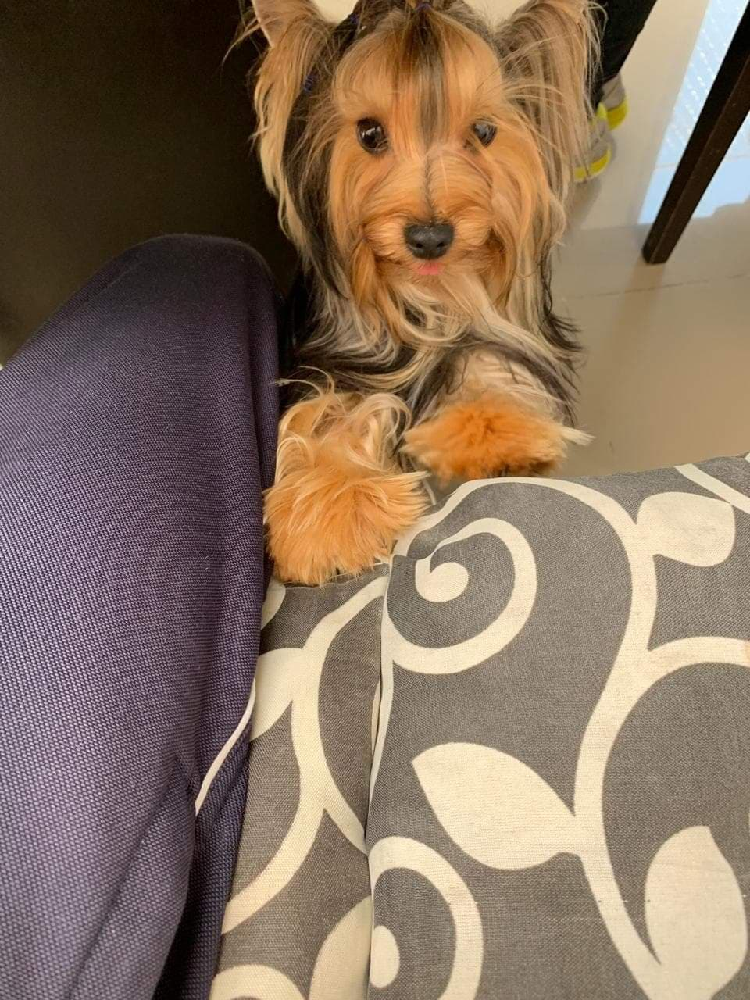
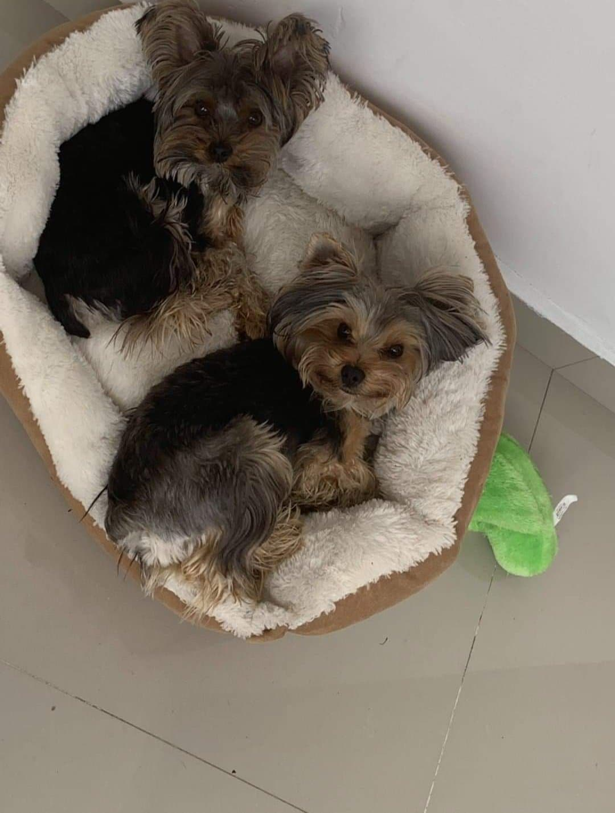

Ella es la que siempre exige pollito en lugar de croquetas, siendo la mas melindrosa, por lo que mas adelante les enseñaremos a preparar un delicioso pollito.


El Yorkshire terrier es una raza canina producto de la combinación de terrier escoceses e ingleses, que se originó cuando una parte de la población de Escocia se vio desplazada, debido a la Revolución industrial, y se asentaron en Inglaterra
Ella es la mamá de la familia puro beso, es la más amada por la familia, ella es la mandamás de los 3, aunque es un poco rara, ya que si le das mucho amor se aleja y a veces sólo quiere estar pegado a ti.
Ella es la que siempre exige pollito en lugar de croquetas, siendo la mas melindrosa, por lo que mas adelante les enseñaremos a preparar un delicioso pollito.

Bebé Max es un tanto curioso y algo torpe, es el más callado y serio de todos, pero al mismo tiempo, es el que más atención quiere, siempre que intentes acariciar a alguno de los otros 2, Max se pondrá en su camino para recibir todas las caricias.


Bebé Ace es el consentido de la familia, le encanta el amor y todo el tiempo se acerca para recibirlo, siempre hace travesuras junto a su hermano, nunca se separan.
Él es el que altera a todos, pues siempre se pone a ladrar jugar y saltar, además de que es el que ladra más agudo…